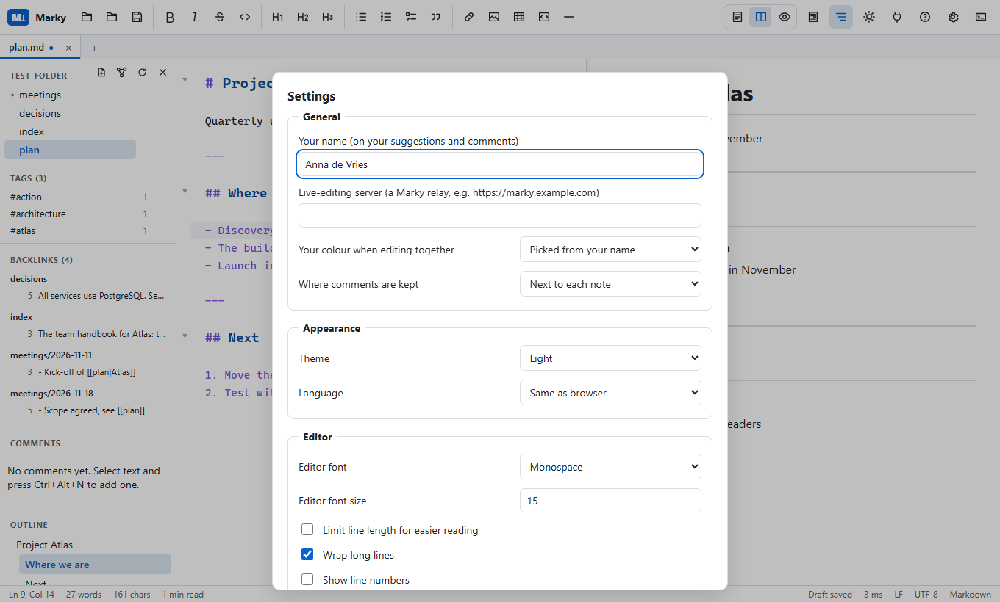
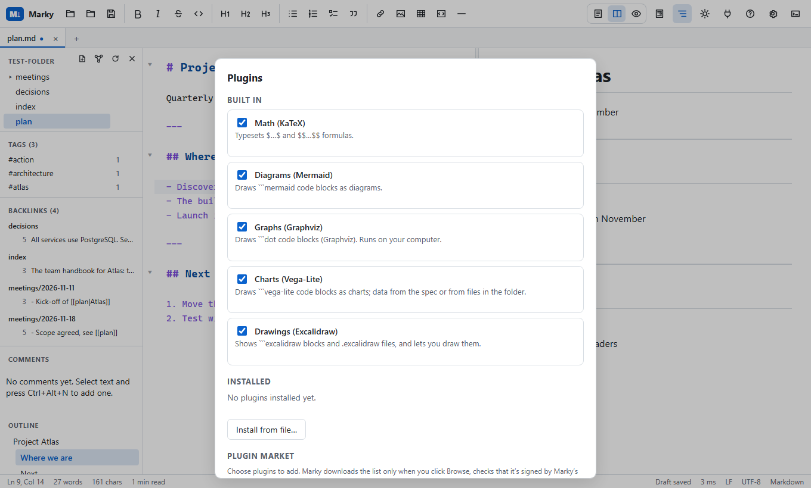

15. Settings and plugins
Settings
Open them with Ctrl+, or the gear button. Changes apply at once.

| Section | Settings |
|---|---|
| General | Your name (with your suggestions and comments, and in shared notes); your colour when editing together; where comments are kept; the live-editing server. Desktop: check for updates; the Confluence address, e-mail and space |
| Appearance | Theme (system, light, dark, sepia, high contrast); language (English, Nederlands) |
| Editor | Font and size, readable line length, word wrap, line numbers, spellcheck, Markdown checks, the editing view, keybindings (Standard, Vim, Emacs), focus-mode options, how pasted pictures are stored. Desktop: titles for pasted web addresses |
| Preview | Font size, scroll sync, the PlantUML server, loading pictures from the internet, your own CSS for the preview and exports |
| Features | Switch off what you don't use (Git and AI on the desktop; tags and backlinks, the graph, slides, contents blocks, architecture work, sync-conflict notices). Nothing is deleted. Desktop: which AI agent the writing assistant uses |
Export and Import save your settings to a file and read them back (handy on a second computer); Reset restores the defaults.
Updates (desktop)
Marky checks for a new version when it starts (switch this off in Settings › General) and asks before installing. Check for updates in the palette checks now. Updates are signed: Marky only installs a version signed by its makers.
Plugins
Manage plugins… (the plug button) lists the plugins.

Built in (switch them off if you don't need them): Math, Diagrams (Mermaid), Graphs (Graphviz), Charts (Vega-Lite), Drawings (Excalidraw).
The plugin market
Plugin market › Browse shows plugins you can add: Kanban boards, CSV tables, calculations, QR codes, readability, repeated words, change case, a focus timer and more.
- Search, or pick a category.
- Details shows what a plugin does, what it's allowed to do, in plain words, and what changed in the latest version.
- Before installing, Marky shows the permissions again and asks.
- Installed plugins with a newer version show Update to …; if an update asks for more than before, the new permissions are marked.
- Marky fetches the list only when you click Browse, only shows a list signed by Marky's maintainer, and checks every plugin it downloads against that list.
How plugins are kept safe
Plugins run in a sandbox without network access, and only get what they asked for and you allowed (read the note, change it, add commands, draw code blocks …). A plugin that crashes or hangs is switched off. If something misbehaves, Restart in safe mode starts Marky without plugins. Plugins can't read encrypted notes.
You can also install a plugin from a .js file, and write your own: see the plugin documentation in the Marky repository.
The command line
marky-cli.mjs (on the releases page, needs Node.js 20 or later) runs Marky's checks and exports in a terminal or a CI pipeline:
node marky-cli.mjs lint docs/ # check every note in docs/
node marky-cli.mjs lint docs/ --fix # and fix what's clear
node marky-cli.mjs lint docs/ --format github # annotations in GitHub Actions
node marky-cli.mjs export note.md --html # or --docx, or --pdf
node marky-cli.mjs tokens design.md --format tailwind4 -o src/theme.css
tokens writes the design tokens of a note's tokens blocks (or of a tokens .json/.yaml file) as css (the default), scss, json, tailwind4, tailwind3 or ts, to the screen or to -o.
lint ends with exit code 1 when it finds problems, so a pipeline can fail on them.